Accesorios.
¿Necesitas accesorios de baño modernos? Ven a nuestra tienda en Barcelona.
Disponemos de una amplia selección de accesorios para baños como toalleros, portarrollos, jaboneras, colgadores, toallas, básculas, cortinas de ducha, escobilleros… y demás accesorios con sello de calidad para el cuarto de baño de diseño.
Intentamos presentar siempre las últimas tendencias para cubrir las necesidades más exigentes de nuestro público, profesionales y particulares.
Si sigues leyendo, más abajo en esta misma página verás las últimas novedades de accesorios para el cuarto de baño.
Marcas en el showroom
- Pom d’Or
- Inda Bathroom
- Cosmic
- Agape
Y si lo que buscas no está en exposición, lo buscamos en la Bagnoteca.
Novedades 202626

 Accesorios
AccesoriosCuando el toallero, el espejo y los estantes no hablan el mismo idioma que el mueble
Se eligen aparte, sin pensar en si comparten lenguaje con la pieza principal. El resultado: un baño con elementos sueltos que no terminan de encajar.
Nendo lo evita en Edge: estética lineal y depurada, con bordes acampanados como detalle sutil, fabricada en mármol y madera. Inbani completa la colección con accesorios a juego —toalleros, perchas, porta rollos, espejos, bancos y estantes— con el mismo equilibrio entre solidez y ligereza visual.
 Accesorios
AccesoriosInodoro de baño con descarga en espiral – Ceramica Cielo
El inodoro con RIMLESS 2.0.1 es clave para proyectos que exigen higiene superior y mínimo mantenimiento.
Su descarga en espiral garantiza una limpieza total del interior, esencial para reducir la proliferación bacteriana en proyectos de alto tráfico o residenciales.
Esta pieza aporta valor de sostenibilidad con un menor consumo de agua y un funcionamiento muy silencioso en cada descarga.
El sistema ADAPTO es su gran ventaja: una conexión hidráulica versátil que simplifica la instalación y asegura compatibilidad en cualquier reforma.

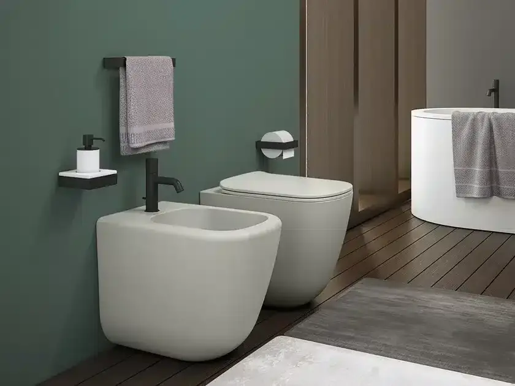
AccesoriosAccesorios baño Era – Cerámica Cielo
Cerámica Cielo presenta su nueva línea de elementos para baño “Era”. Una colección que se inspira en el agua como elemento que transmite naturalidad y ligereza en su diseño.
Con esta premisa nace Era, una propuesta integral de muebles y complementos para baño que combina diseño inteligente y belleza, aportando modernidad y confort a la estancia.
La conexión ideal entre la tecnología más avanzada y el diseño en su estado más puro. Una verdadera revolución en la industria, como sus sanitarios que adoptan la innovadora tecnología de descarga Rimless 2.0.1.
Experimenta el máximo confort al aire libre con la tumbona en Corian de Rexa Design, la elección ideal para aquellos que buscan crear espacios exteriores sofisticados y funcionales.
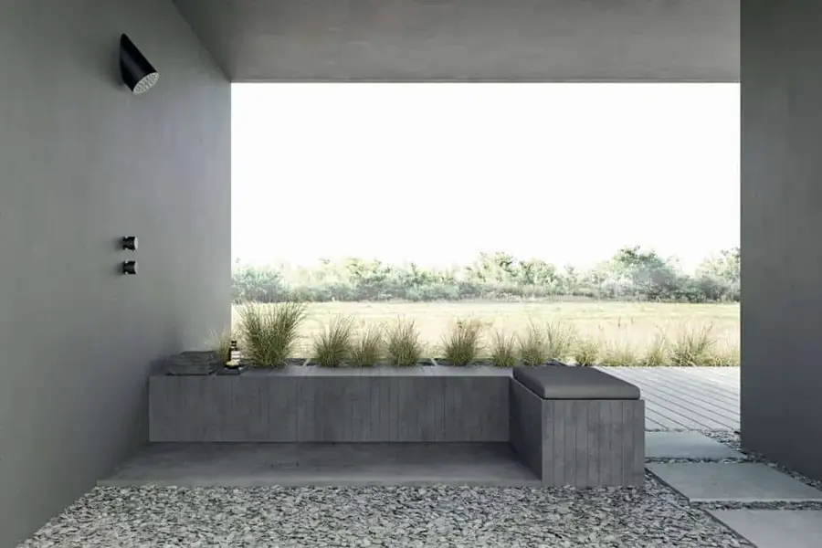
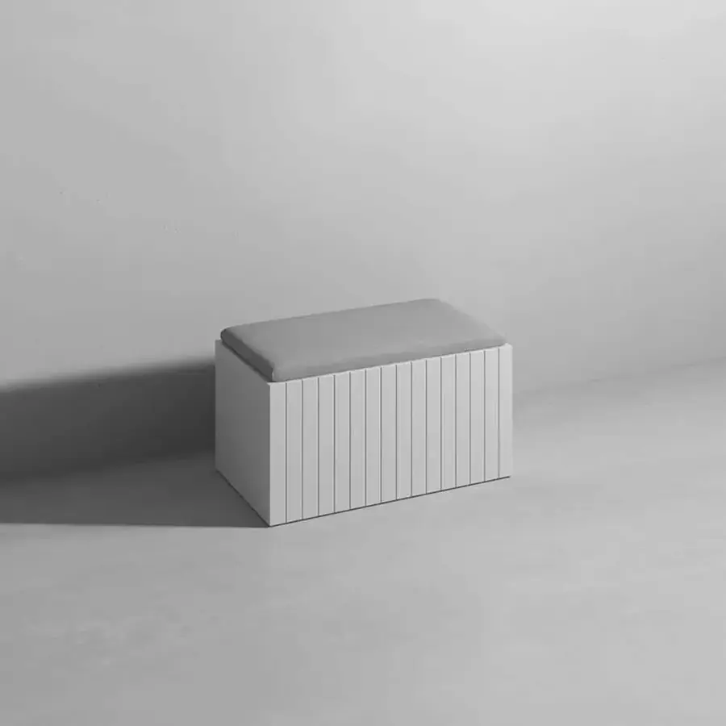
AccesoriosBanco en corian – Rexa Design
Rexa Design presenta su nuevo banco “Solid Surface”. Con un diseño único y las propiedades técnicas de mayor calidad avaladas por Corian®, la solución de Rexa es la respuesta a cualquier necesidad espacial y decorativa.
Apta para espacios exteriores, es una pieza con gran resistencia a impactos y condiciones climáticas como la lluvia o el viento. Esta dureza y robustez le aporta durabilidad y permite un bajo mantenimiento.
Solid Surface está disponible en varios módulos configurables, con múltiples acabados en tonalidades neutras.
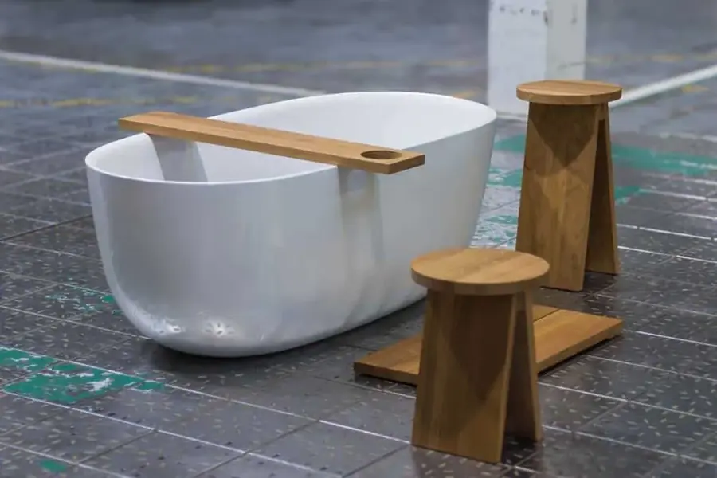
AccesoriosAccesorios para bañera e15 – Kaldewei
La colaboración entre Kaldewei y e15 resulta en una nueva línea de accesorios para bañera que fusiona diseño minimalista y artesanía de alta calidad.
Diseñada por Stefan Diez, la colección incluye taburetes, bancos, reposapiés, toalleros y puentes de bañera, todos fabricados en roble macizo con detalles de cuero hidrófugo y formas geométricas.
Estos muebles, que ofrecen la máxima comodidad, se complementan a la perfección con los productos de acero vitrificado de KALDEWEI, disponibles en una amplia gama de tonalidades.
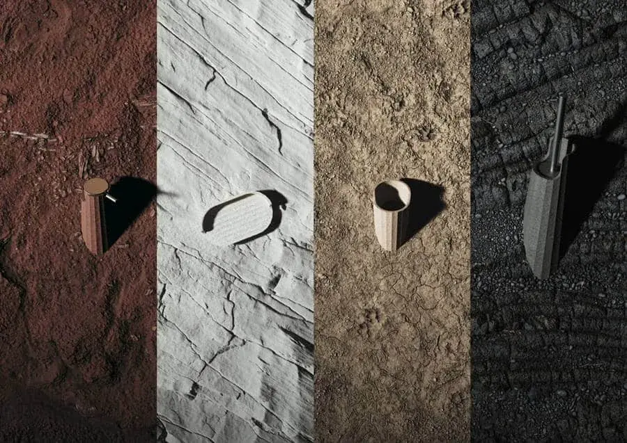
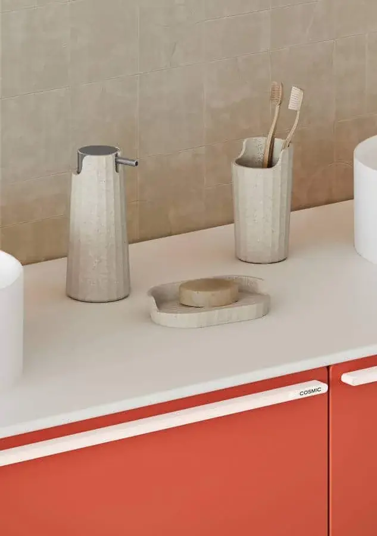
AccesoriosComplementos para el baño L’Avenir – Cosmic
Cosmic lanza la colección más rompedora y sorprendente de su catálogo, su nueva línea de complementos para el baño “Avenir».
La marca española encuentra su razón de ser en la lucha por la sostenibilidad y el respeto hacia el medioambiente. Y es desde aquí desde donde el reconocido diseñador Ricard Ferrer, junto a OiKo Design Office, trabaja en la búsqueda del equilibrio entre lo perdurable y la innovación.
El conocimiento de Ricard Ferrer sobre nuevas tendencias explota en esta genuina colección, hecha en un 96% a partir de plásticos reciclados. La mejor opción para aquellos que persiguen calidad y resistencia, sin perder la sensibilidad por los detalles.
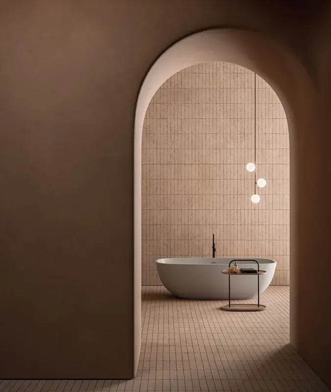
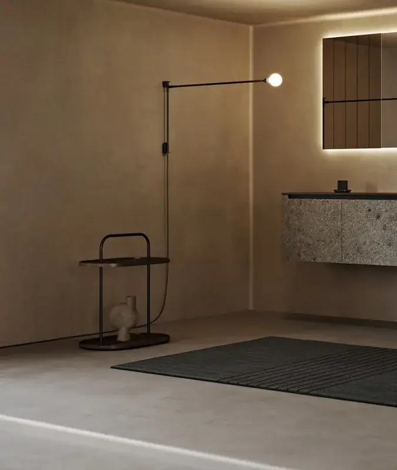
AccesoriosAccesorios de baño Norm Tables - Inbani
Inbani presenta una familia de accesorios formada por mesas auto portantes de gran funcionalidad, poniendo en primer plano este producto con carácter y personalidad. Una colección para baños, que se puede hacer extensible a otras partes del hogar.
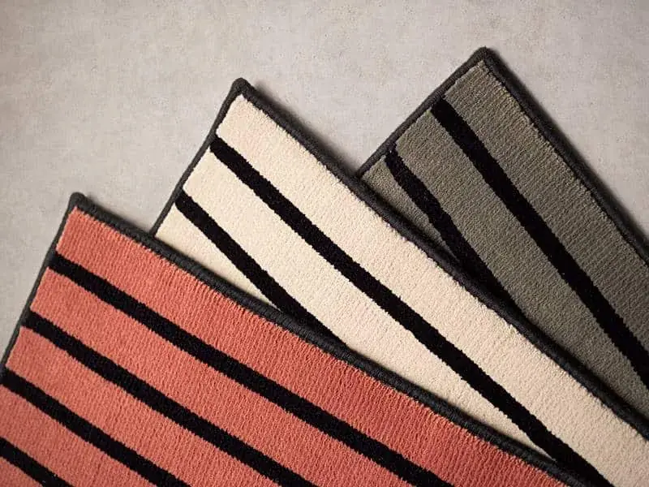
AccesoriosAlfombras para baños - Inbani
Junto con All the way to Paris, Inbani ha creado esta colección de alfombras de baños, presentada en dos modelos, de diseño moderno, de inreresantes geometrías, y de una alta funcionalidad.
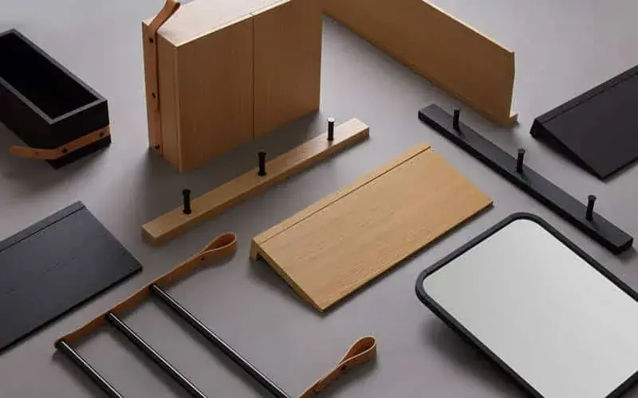
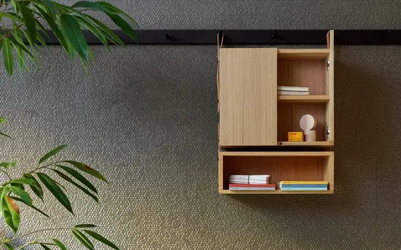
AccesoriosAccesorios para baños - Mutina
Duravit ha desarrollado un sistema de griferías para evitar los momentos desagradables, en el baño, cuando, por ejemplo, ponemos el agua demasiado caliente.
Y como la seguridad no está reñida con la estética, el sistema incorpora un interesante y característico diseño.
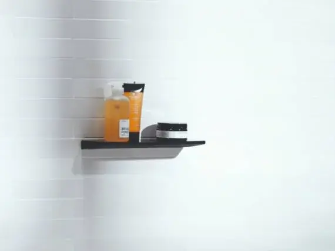
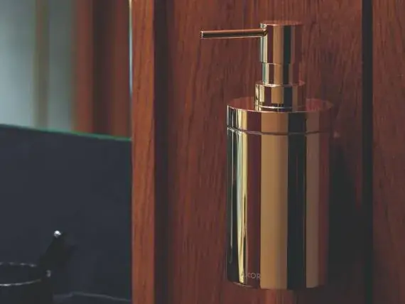
AccesoriosAccesorios para el baño - Axor
Los accesorios de AXOR singularizan y se adaptan a cualquier espacio de baño, sea cual sea su estética y diseño.
Una amplia gama de accesorios de baño diseñados por el prestigioso Antonio Citterio: Espejos, toalleros, vasos, floreros, candelabros… piezas únicas de una belleza estética inigualable y de una practicidad sin límites.
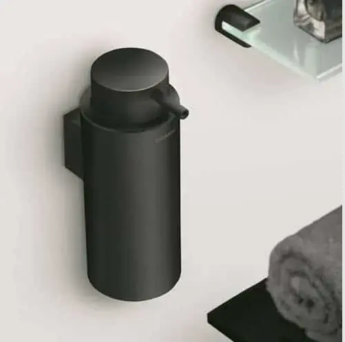
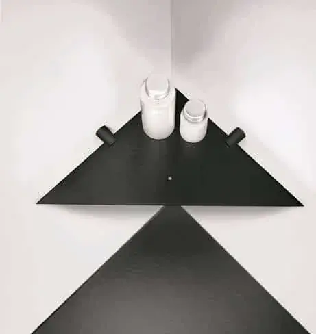
AccesoriosAccesorios de baño Logic – Cosmic
¿Te apetece convertir tu baño en un espacio de marcada estética urbana y vanguardista?
¿Qué tal si para ello incorporas accesorios de un color negro híper mate?
Ahora es posible gracias a la colección de accesorios Logic de Cosmic. Todo un placer contemporáneo tanto visual como táctil.
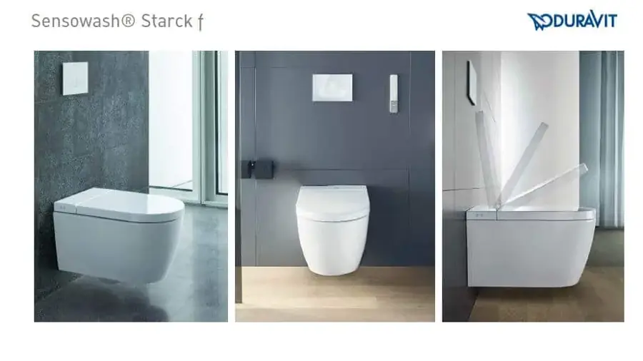
 Accesorios
AccesoriosAsientos de lavabo Stark – Duravit
Imagínate un lavabo con sensores que le ayudaran a saber que alguien se aproxima, para que se levante la tapa, y que alguien se ha sentado…
A lo anterior añádele calefacción tanto en la superficie como en el chorro y secado. Y finalmente intenta imaginar un diseño icónico cuya función es la de aportar máximo confort.
Pues bien, todo lo dicho lo acaba de presentar Duravit en sus nuevos asientos de lavabo Stark, un lanzamiento que tiene visos de dar mucho que hablar.
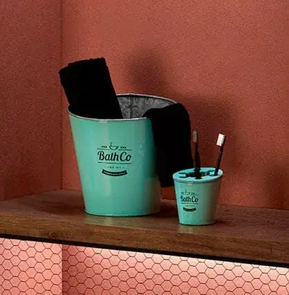
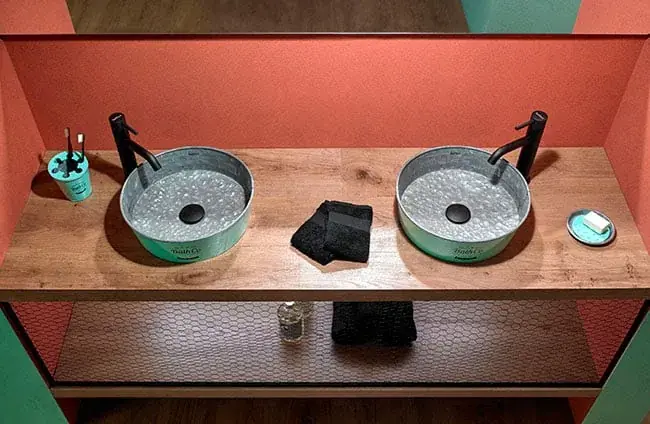
AccesoriosAccesorios de baño Kioto – Bathco
El metal está de moda en los baños.
Tanto si hablamos de acabados de lavabos y bañeras, como si lo hacemos de accesorios para el baño, lo metalizado está en boga.
Bathco, firma española especializada, se apunta a la tendencia con su nueva colección Kioto, el que el zinc cobra el protagonismo de lavabos, jaboneras, válvulas y papelera.
Un guiño a la estética vintage, que se rememora aquellos baños de antaño.
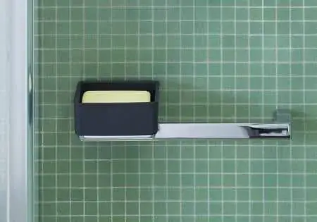
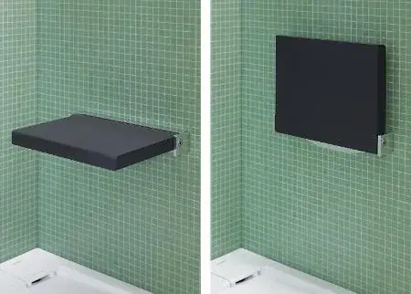
AccesoriosAccesorios para ducha – Duravit
Además de mejorar la experiencia de la ducha en cuanto a confort, son varios los accesorios que puedes incorporar para aportarle al conjunto una relajante coherencia visual.
Asideros, bandejas en las que colocar los productos propios de ducha, y bancos, son especialmente útiles, y más en aquellas duchas que precisen de elementos que ayudarán a ducharse, sentarse o agarrarse a quien lo necesite.
Y todo ello, creado bajo un prisma de diseño moderno (EOOS) que siempre mejorará la experiencia del conjunto.
Así son los accesorios de ducha que propone la firma Duravit
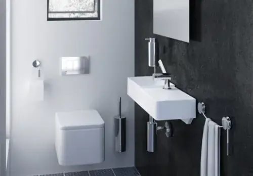
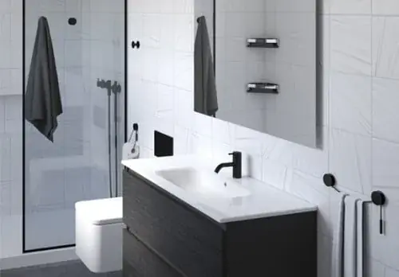
AccesoriosAccesorios para baños Diabolo – Cosmic
La firma de accesorios para baños Cosmic, entre muchas otras propuestas, también te propone una colección “más joven”: Bath+
Dentro de la misma, acaba de incorporar una propuesta de accesorios, Diabolo, inspirada en los amarres de los barcos.
Diabolo, destaca por la funcionalidad en cuanto a instalación y uso. Incluye un toallero, un portarrollos y un colgador, que puedes combinar en diferentes colores.
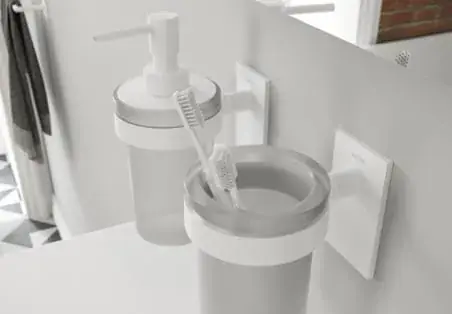
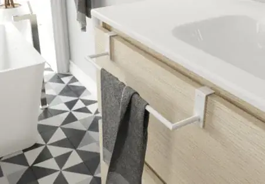
AccesoriosAccesorios para baños Stick – Cosmic
La colección más joven de Cosmic, Bath+, acaba de añadir a su catalogo una nueva propuesta de accesorios y complementos para el baño: Stick, inspirada en la sociedad urbanita.
Los accesorios para baños Stick destacan por la ligereza de sus formas, sus tres opciones en cuanto a colores (blanco mate, negro mate y cromo), además de por la facilidad de instalación utilizando una cinta adhesiva 3M.
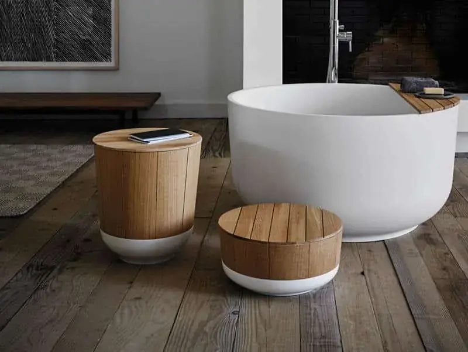
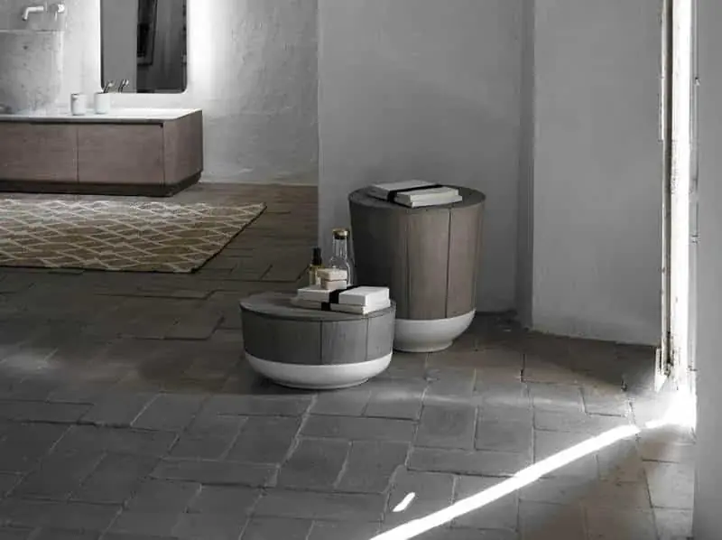
AccesoriosAccesorios para baños Origin - Inbani
Son muchas las personas que cuando deciden incorporar accesorios a su cuarto de baño, piensan, no solo en cuestiones estéticas, sino también en las más fundamentales relacionadas con la practicidad de las mismas.
En Inbani lo saben, y fruto de ello acaban de lanzar al mercado la nueva colección de accesorios para baños Origin.
Madera, metal y vidrio; diseños prácticos que recuerdan el concepto del “placer y lujo asiático”; funcionalidad llevada a su máxima expresión, la cual facilita la colocación y almacenamiento de botes y toallas, así como su uso.
Dimensiones y diseños pensados para cuartos de baño de distintas dimensiones. Compruébalo tú mism@ en las fotos que adjuntamos.
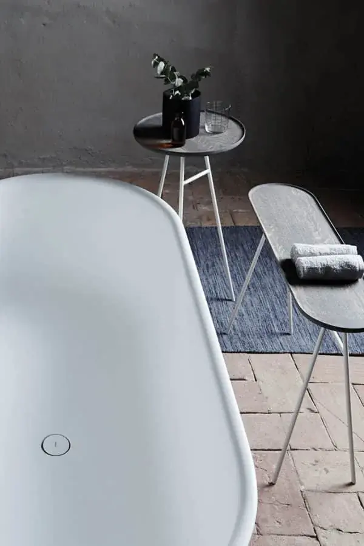
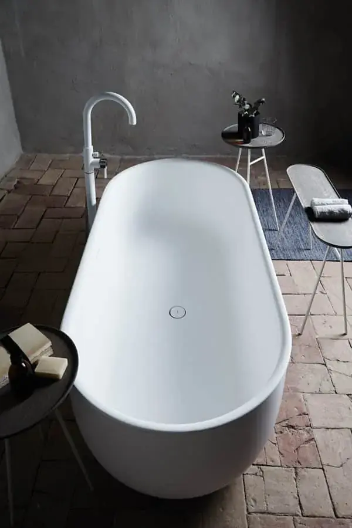
AccesoriosBandejas para baños Tray - Inbani
¿Quién no quisiera dejar de ver muchos de los productos que poco a poco se acumulan en cualquier cuarto de baño?
¿Quién no quisiera lo anterior, colocándolo todo a partir de un diseño moderno y tremendamente práctico, que facilite coger con facilidad aquello que se precise cuando uno quiere?
Si estas son tus preguntas, la respuesta la tienes en la nueva T-BOX de la marca de accesorios para baños Easy – Drain, unas discretas y elegantes hornacinas de pared que tienes disponibles en diferentes tamaños y colores.
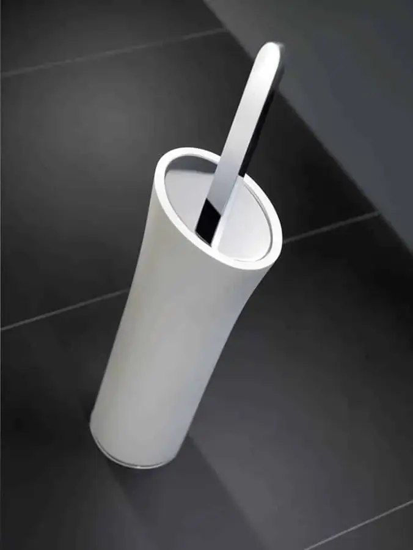
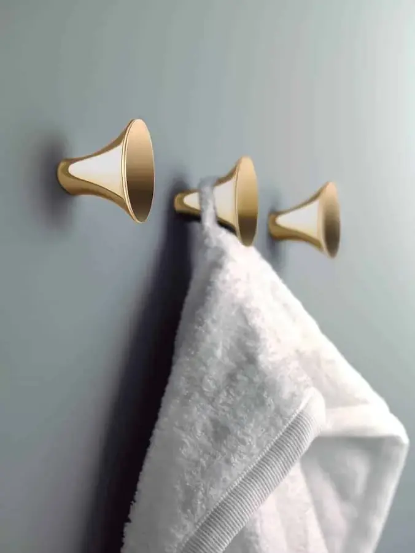
AccesoriosAccesorios para cuartos de baño Belle Or - Pom d´Or
Pom d´Or es una marca consolidada de accesorios para baños, que acaba de incorporar nuevas piezas a su colección Belle Or, diseñada por Bruna Pasisarda y caracterizada por su la elegancia de sus formas exquisitas.
Desde un espejo de aumento, pasando por una caja para kleenex, así como una papelera, un portapapel y una jabonera para ducha, las nuevas piezas completan una colección tan consolidada, dirigida a un público para quien la elegancia se transmite en cualquier detalle, por pequeño y poco trascendente que parezca.
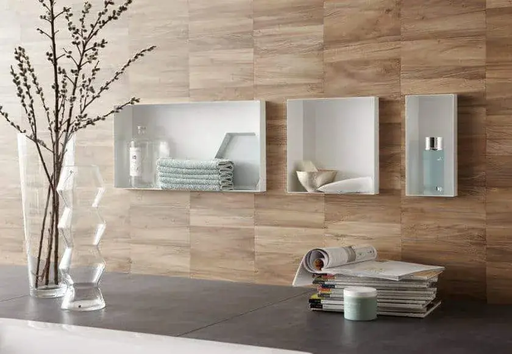
AccesoriosHornacina de pared C-Box - Easy Drain
Perfecta para los que además de diseño, quieren disponer de más espacio en el cuarto de baño donde guardar aquello que se necesite tener a mano.
La nueva hornacina para baños C-BOX con profundidad ajustable, está fabricada en acero inoxidable de la más alta calidad, y la tienes disponible en varios tamaños y colores
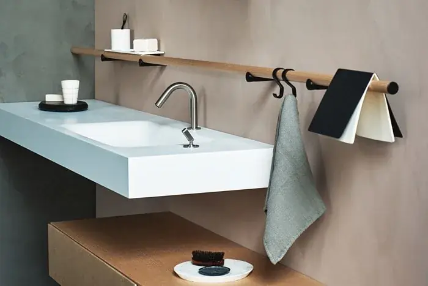
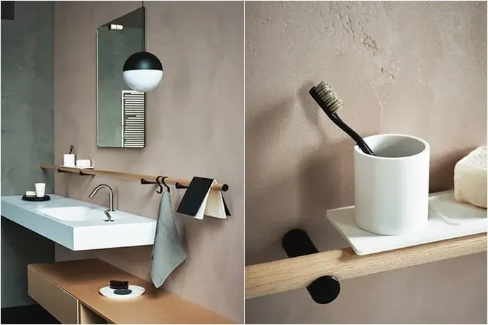
AccesoriosAccesorios para baños Dot Line - Agape
Esta afamada firma de productos para el baño, nos presenta, en colaboración con Dot Line, una serie de accesorios de baño, únicos y especiales (nada nuevo atendiendo a la calidad con la que siempre nos sorprenden en cada nueva creación que lanzan al mercado).
La traducción literal al español “El punto y la línea”, ya deja entrever que es, o qué se puede resumir, este nuevo accesorio de baño: formas gráficas capaces de crear un sinfín de idiomas, en las que la incorporación del punto se convierte en una interrupción estructural, que facilita la ruptura y la incorporación de eun patrón rítmico a lo largo de toda la línea.
Los accesorios para baños Dot Line, están fabricados en aluminio, y además están recubiertos de madera de roble o anodizado negro, con soportes de aluminio anodizado negro, y también con estantes de Corian® negro o blanco.
Resumiéndolo en una frase: elegancia tradicional e innovación, capaz de rendir homenaje a los productos de Agape de antaño.
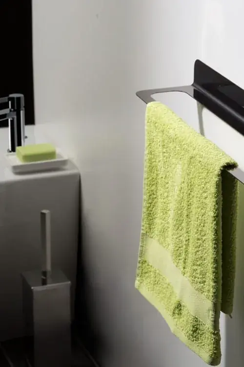
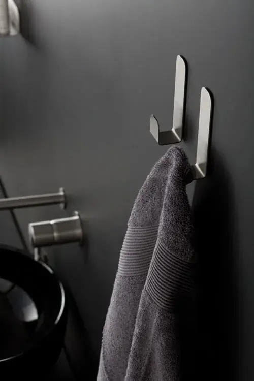
AccesoriosAccesorios para el baño - Ritmonio
Te presentamos esta nueva colección de accesorios para el baño de Ritmonio, marca italiana, cuya nueva propuesta pretende darle más protagonismo a este tipo de productos en el cuarto de baño actual.
Una colección muy completa, con un diseño moderno y versátil, y una buena gama de acabados sobrios, originales, elegantes, refinados y con cierto aire de sofisticación, la cual puedes encontrar en cromo negro, cromo negro cepillado, acero inoxidable pulido, y acero inoxidable cepillado.
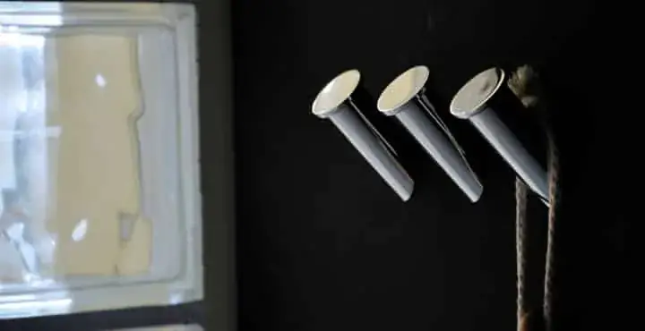
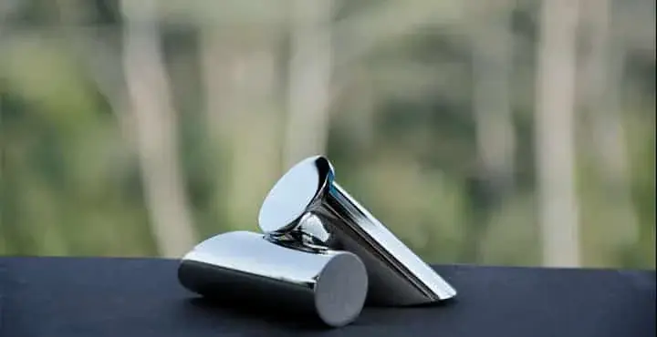
AccesoriosColgadores para el baño 500 - Bemede
Objetos sencillos y simples, habituales en ambientes rurales y capaces de generar pasiones instantáneas. Luz y singularidad a primera vista. Un tronco sin tornillos a la vista. Estos son algunos aspectos que caracterizan esta colección de accesorios para el cuarto de baño “bemede”.
Colgadores para baños como principales e indiscutibles protagonistas. Un diseño exclusivo y articulable, que te permitirá combinarlo con infinidad de estilos. La predilección para una gran cantidad de diseñadores de interiores que incorporan este tipo de accesorios.
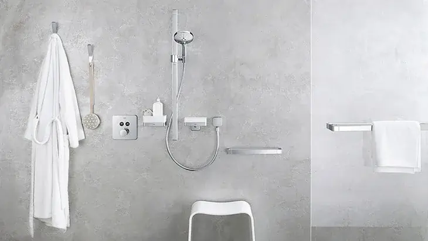
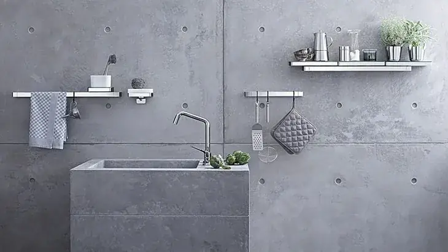
AccesoriosComplementos de lujo para el baño individual - Axor
Axor ha añadido a su cartera de productos, los nuevos accesorios de baño Axor Universal Accessories.
Para que puedas añadir a tu cuarto de baño de bienestar personal una pinzelada de estilo definitivo con estos complementos.
Puedes combinarlos con diferentes estilos o con las numerosas colecciones Axor que marcaran la diferencia en tu baño: prácticas repisas, toalleros, dosificadores de jabón líquido y atractivos apliques para el espejo son algunos de los ejemplos, entre otros elementos.
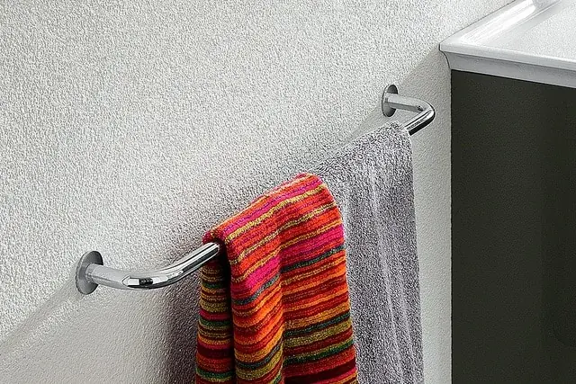
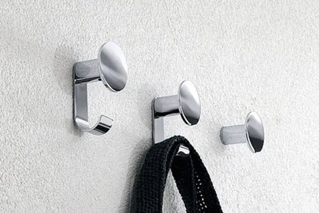
AccesoriosAccesorios para baño One - Inda
Lineas simples y rigurosas con el fin de interpretar los diversos estilos de vida. Esta es One, la serie de accesorios para el baño diseñada por Matteo Thun y Antonio Rodríguez. Una serie completa de lineas pulidas con acabado en latón cromado (desde la jabonera hasta el toallero) que lleva el diseño contemporáneo a las casas de los consumidores más exigentes. La gran variedad de funciones y la claridad formal convierten One en una solución particularmente flexible desde el punto de vista estilístico y práctico, adaptándose tanto en ambientes públicos como residenciales.
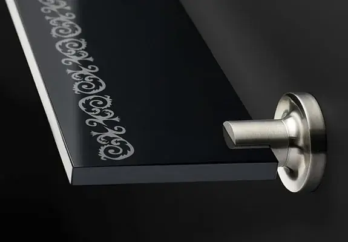
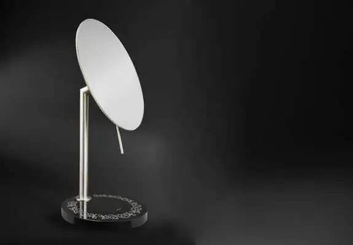
AccesoriosAccesorios de lujo para el baño - Heritage
Tradición y dominio artesanal es su esencia. Así surge Heritage, accesorios de baño lujosos y elegantes que combinan una elaboración artesanal con la tecnología más innovadora.
Cada accesorio se crea con los materiales de la más alta calidad, y cada pieza se somete a exhaustivos controles para pulir cada pequeño detalle y conseguir conferirle a cada una el valor de auténtica joya.
Inspirado en las tendencias de moda y el interiorismo de lujo, se crean los 5 estilos de Heritage:
Pure te sugerirá pureza y armonía; Chester, elegancia, distinción y alegría; Timeless misterio y sensualidad; Rigato, desafío, provocación y descaro; mientras que Coco, sintetiza sofisticación, lujo y glamour.